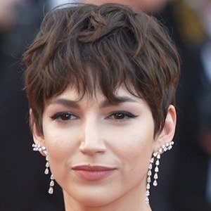

HOME
GALERIA
ATOR
PERSONAGEM
Fotos
Úrsula Corberó
Tóquio (Silene Oliveira)

Itziar Ituño Martinez
Raquel Murillo (Lisboa)
Álvaro Antonio García Pérez
Professor (Sergio Marquina)
Miguel Herrán
Aníbal Cortés (Rio)
Pedro Ochoro González Alonso Lopez
Berlim (Andrés de Fonollosa)
Esther Acebo
Mónica Gaztambide (Estocolmo)
Jaime Lorente López
Daniel Ramos (Denver)
Francisco Martínez Tous
Agustín Ramos (Moscou)
Alba González Villa
Ágata Jiménez (Nairobi)
Darko Perić
Mirko Dragic (Helsinque)
Enrique Javier Arce Temple
Arturo Román
María Pedraza
Alison Parker
Lionel Rodrigo de la Serna Chevalier
Martín Barroti (Palermo)
Hovik Keuchkerian
Bogotá
Najwa Nimri Urrutikoetxea
Alicia Sierra
Fernando Cayo
Coronel Luis Tamayo
Luka Peroš
Marsella
Belén Cuesta Llamas
Julia (Manila)